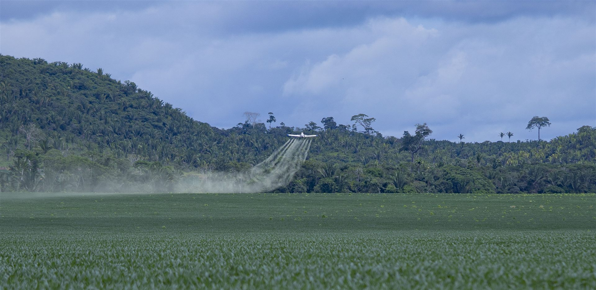
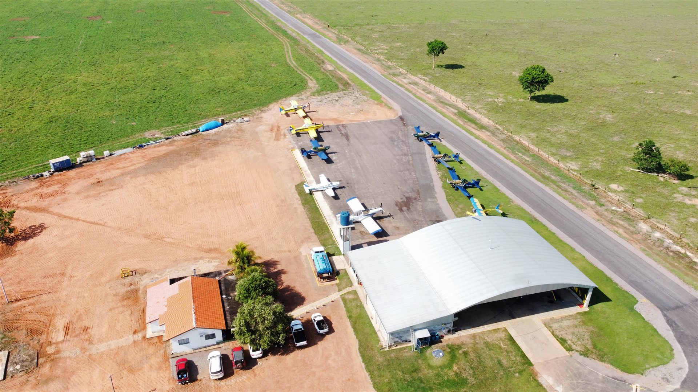
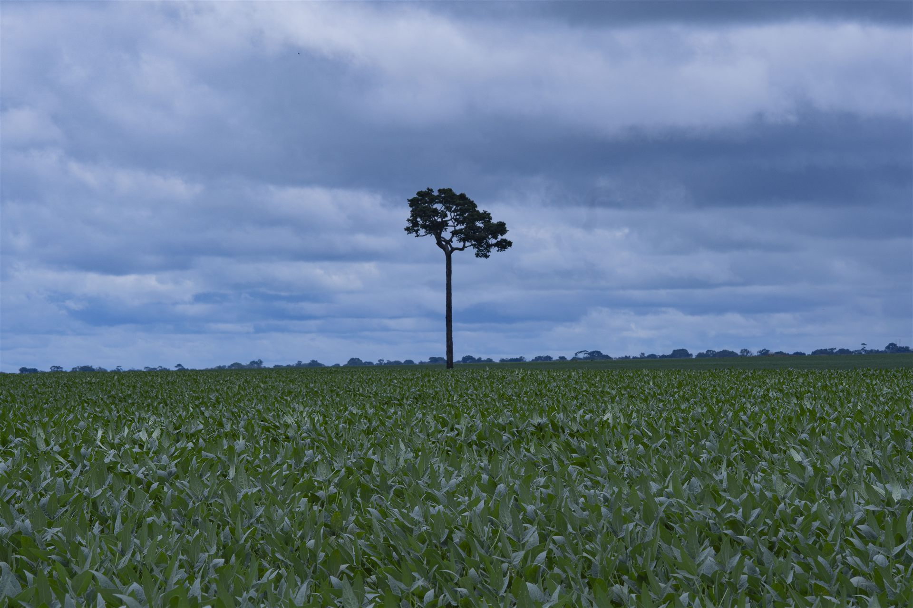

Pulverização
Fungicidas, inseticidas e herbicidas com gotas calibradas e cobertura uniforme.
Pulverização, adubação, semeadura e combate a incêndios com precisão, segurança e frota moderna. Atendemos produtores em Rondônia, Mato Grosso e Acre.
Do preparo à colheita — e além dela, no combate ao fogo. Soluções completas com tecnologia de precisão.
Fungicidas, inseticidas e herbicidas com gotas calibradas e cobertura uniforme.
Distribuição aérea de fertilizantes sólidos com dosagem precisa em grandes áreas.
Plantio de sementes e cobertura vegetal com agilidade em áreas extensas.
Combate aéreo ao fogo com decisões baseadas em clima, vegetação e comportamento do incêndio.

Aeronaves modernas e equipadas para entregar precisão e eficiência em cada operação.
Aeronave nacional (Embraer), ágil e econômica para pulverização.
Alta capacidade e desempenho para grandes áreas.
Nosso carro-chefe: turboélice Pratt & Whitney, GPS de precisão e tecnologia de ponta.

Desde 2020, a Jusarah Agro Aérea leva tecnologia de aplicação aérea ao produtor rural do Norte do país. Somos de Cerejeiras–RO e conhecemos de perto os desafios de quem planta em Rondônia, Mato Grosso e Acre.
Investimos em segurança operacional, capacitação da equipe e responsabilidade ambiental — porque voar sobre a lavoura é também um compromisso com o futuro dela.
Acompanhe um pouco do dia a dia da Jusarah no campo — da decolagem à aplicação com precisão.
Operamos dentro das normas da aviação civil e da agricultura brasileira.
Novidades da safra, participações em eventos e a série Jusarah Explica, publicadas pela própria equipe.

Semeando Esperança
Já na 5ª edição, o projeto Semeando Esperança começou em 2022 e leva às escolas, para os alunos do 5º ano, o conhecimento sobre a importância da aviação agrícola e de onde vem o alimento.
As crianças participam de palestras didáticas, visitam fazendas e se envolvem em um concurso de redação sobre a importância da aviação agrícola para a sua cidade, com premiação para os melhores trabalhos.